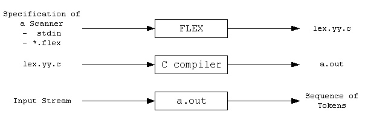

Flex¶
简介¶
最初的词法分析器生成程序 Lex 由 Mike Lesk 和当时在 AT&T 实习的 Eric Schmidt 于 1975 年合作完成。Lex 可单独使用或与 Johnson 的 yacc 协同工作。然而，Lex 以低效率和 bug 而闻名。在 20 世纪 80 年代，Lawrence Berkeley 实验室的 Vern Paxson 以 C 重新编写了 Lex，命名为 Flex（Fast Lexical Analyzer Generator）。Flex 现在是 SourceForge 的一个项目，用于 C/C++ 的词法扫描生成器。Flex 支持使用正则表达式描述词法模式。
Flex 执行过程如下：

-
首先，Flex 源程序中的规则被转换成状态转换图，生成对应的代码，包括核心的
yylex()函数，保存在lex.yy.c文件中。Flex 源程序通常以.l为后缀，按照 Flex 语法编写，用于描述词法分析器。 -
生成的
lex.yy.c文件可以通过 C 编译为可执行文件。 -
最终，可执行文件将输入流解析成一系列的标记（tokens）。
Flex 语言¶
Flex 源程序的结构如下：
声明部分
规则部分
C 代码部分
- 声明部分包含名称声明和选项设置，
%{和%}之间的内容会被原样复制到生成的 C 文件头部，可用于编写 C 代码，如头文件声明和变量定义等。 - 规则部分位于两个
%%之间，包括多条规则，每个规则由正则表达式定义的模式和与之匹配的 C 代码动作组成。当词法分析程序识别出某模式时，执行相应的 C 代码。 - C 代码部分可包括
main()函数，用于调用yylex()执行词法分析。yylex()是由 Flex 生成的词法分析例程，默认从 stdin 读取输入文本。
下面我们结合具体的例子，来看 Flex 的源程序的三部分结构：
/* %option noyywrap 功能较为复杂，同学们自行了解 */
%option noyywrap
%{
/* Flex 源程序采样类 C 的语法和规则 */
/* 以下是声明部分，`%{` 和 `%}` 之间的内容会被原样复制到生成的 C 文件头部
包括该条注释内容 */
#include <string.h>
int chars = 0;
int words = 0;
%}
/* 以下是规则部分，在规则部分写注释不能顶格写 */
/* 每条规则由正则表达式和动作组成 */
/* 第一条规则匹配纯字母的字符串，并统计字母个数和字符串个数
其中 yytext 为匹配到的 token */
/* 第二条规则匹配其他字符或字符串并执行空动作 */
%%
/* 在规则部分，不要顶格写注释 */
[a-zA-Z]+ { chars += strlen(yytext); words++; }
. {}
%%
/* 以下为 C 代码部分 */
int main()
{
/* yylex() 是由 Flex 自行生成的，用于执行 */
yylex();
/* 对于 stdin 输入匹配结束，执行其他操作 */
printf("look, I find %d words of %d chars\n", words, chars);
return 0;
}
编译和执行¶
下面，我们将演示如何在 Ubuntu 系统上编译和运行 Flex 源程序，假设以上的 Flex 源程序被保存为 wc.l。
首先，我们执行以下命令将 Flex 源程序转化为 c 程序：
$ flex wc.l
接着，我们查看生成的 lex.yy.c 文件：
$ ls lex.yy.c
lex.yy.c
lex.yy.c 文件比较复杂，你可以简要浏览一下：
$ cat lex.yy.c
......
接下来，我们编译 lex.yy.c 生成可执行文件：
$ gcc lex.yy.c -o lexer
此时，将生成一个可执行文件 lexer：
$ ls lexer
lexer
最后，执行可执行文件并输入 hello world!：
$ ./lexer
hello world!
^D # 如果使用 stdin 作为输入，按 Ctrl+D 退出
look, I find 2 words of 10 chars
恭喜，你已成功使用 Flex 创建了一个简单的分析器！
扩展阅读¶
Flex 自带详细手册，通过以下终端命令打开：
$ info flex
# 按 q 键退出
特别推荐仔细阅读章节 Pattern 和 Matching。
思考题¶
-
如果存在同时以下规则和动作，对于字符串
+=，哪条规则会被触发，并尝试解释理由。%% \+ { return ADD; } = { return ASSIGN; } \+= { return ASSIGNADD; } %% -
如果存在同时以下规则和动作，对于字符串
ABC，哪条规则会被触发，并尝试解释理由。%% ABC { return 1; } [a-zA-Z]+ {return 2; } %% -
如果存在同时以下规则和动作，对于字符串
ABC，哪条规则会被触发，并尝试解释理由。%% [a-zA-Z]+ {return 2; } ABC { return 1; } %%
提示：你可以编写相关程序，实际进行执行。具体原因在 Flex 自带手册的 Matching 章节中有详细说明。